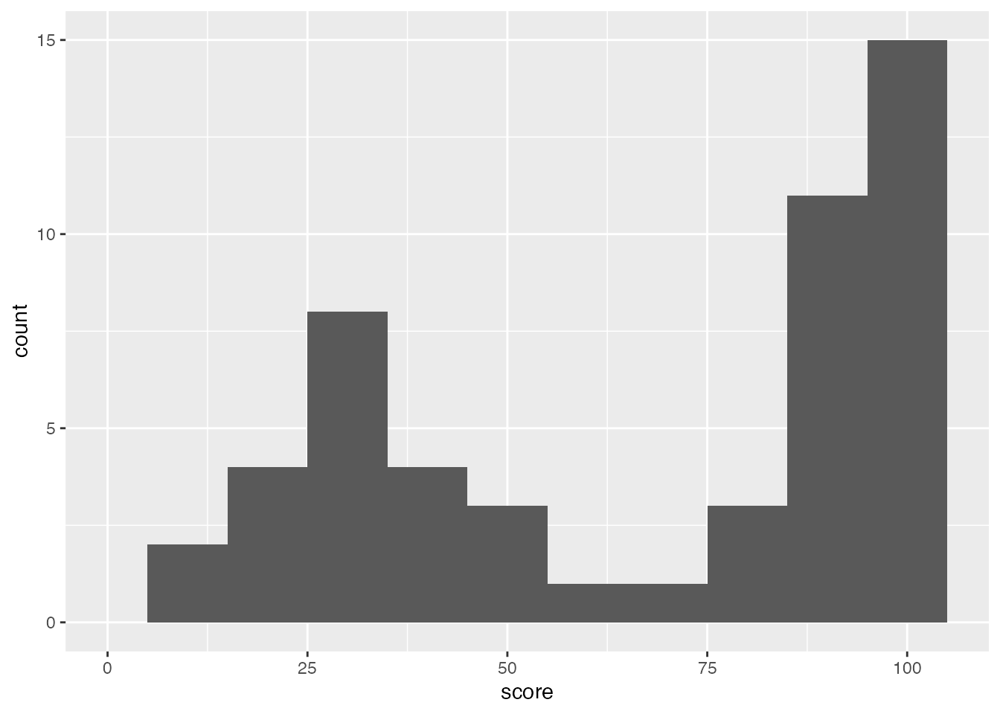
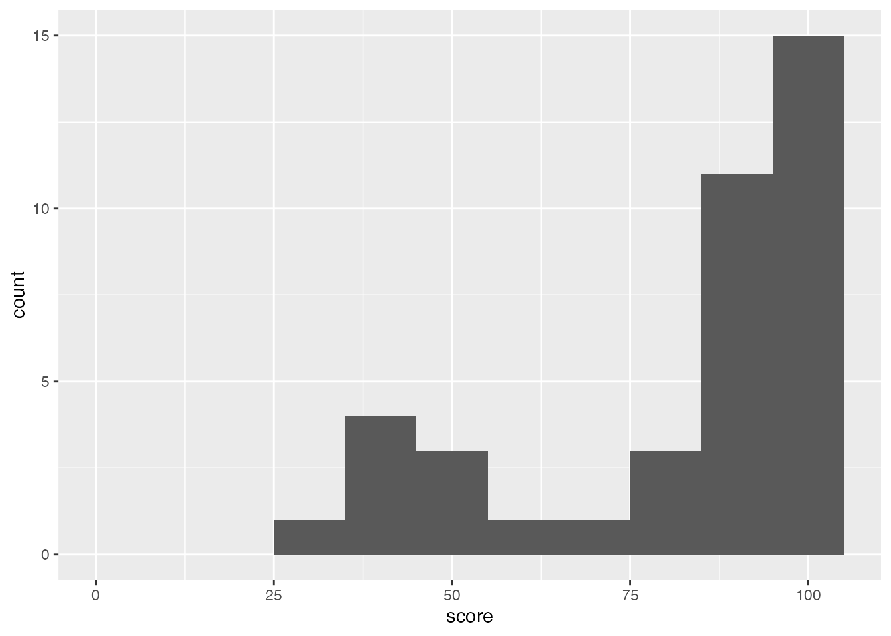

vignettes/peakCombiner.Rmd
peakCombiner.RmdThis vignette for the R package peakCombiner guides you through the preparation of all accepted input files and how to define the best parameters for your analysis. Our goal is to provide you with an easy to understand, transparent and modular framework to create the consensus regions file you need to address your scientific question.
Genome-wide epigenomic data sets like ChIP-seq and ATAC-seq typically use tools (e.g. MACS (Zhang et al. 2008)) to identify genomic regions of interest, so-called peaks, usually for multiple sample replicates and across experimental conditions. Many downstream analyses require a consensus set of genomic regions relevant to the experiment, but current tools within the R ecosystem to easily and flexibly create combined peak sets from conditions and replicates are limited. Here, we describe peakCombiner, a fully R-based, user-friendly, transparent, and flexible tool that allows even novice R users to create a high-quality consensus peak list. The modularity of its functions allows an easy way to filter and recenter input and output data. A broad range of accepted input data formats can be used as input to peakCombiner, and the resulting consensus regions set can be exported to a file or used immediately as the starting point for most downstream peak analyses.
The package peakCombiner contains four main functions to curate and combine genomic regions into one set of consensus regions. A short overview about each the functions is in the table below.
| Function name | What it does | Where to learn more |
|---|---|---|
prepare_input_regions |
Transforms your data into the format needed by peakCombiner for all following steps. | See in section Prepare input data. |
center_expand_regions |
Modifies your genomic regions by centering and then expanding them to a uniform size. | See in section Center and expand regions. |
filter_regions |
Allows you to filter your genomic regions. | See in section Filter regions. |
combine_regions |
Combine overlapping genomic regions to create a single set of consensus genomic regions. | See in section Combine regions. |
Each peakCombiner
function has the parameter show_messages that by default
prints feedback messages as functions run. If you plan to use peakCombiner
non-interactively in a workflow, you can silence these messages by
setting show_messages = FALSE. Note that error messages
will still be printed to help you to troubleshoot potential
problems.
The modularity of peakCombiner
is enabled by standardizing how the genomic regions and samples are
represented in the input and output of all its functions. We chose to
use a tibble because this allows you to easily plot and explore the
data. The columns are described in the table below. Only ‘chrom’,
‘start’, ‘end’, ‘sample_name’ are required to use peakCombiner,
but you have more possibilities for center_expand_regions
and filter_regions if you can
provide the optional ‘score’ and ‘center’ columns. If you can’t provide
data for the optional columns, prepare_input_regions adds
sensible defaults for you. We recommend that you create this standard
tibble using prepare_input_regions (see section “Prepare
input data”), but you can also prepare it yourself (see section “Load from pre-loaded
tibble”)
| Column name | Requirement | Content | Details |
|---|---|---|---|
| ‘chrom’ | required | Name of the chromosome. | - |
| ‘start’ | required | Start coordinate of the genomic region. | 1-based coordinate system, NOT like BED files which are 0-based. |
| ‘end’ | required | End coordinate of the genomic region. | - |
| ‘name’ | optional | Can be any unique identifier for a sample and genomic region, but prepare_input_regions concatenates the ‘sample_name’ and row number. | |
| ‘score’ | optional | Selected enrichment value used to rank genomic regions. | Bigger values are more important. For example, qValue
from Macs2, -log10FDR from another method, or fold enrichment over
background computed from your favorite method. If not provided in input
data, prepare_input_regions is creating this column and
populating it with ‘0’. |
| ‘strand’ | optional | Value to define on which strand genomic region is located. | Values are ‘+’, ‘-’, or ‘.’. If not provided in input
data, prepare_input_regions is creating this column and
populating it with ‘.’. |
| ‘center’ | optional | Absolute genomic coordinate of the center of the region. | Note that another common representation of ‘center’ is
to report the number of base pairs of the summit from the ‘start’
coordinate. We call this value ‘summit’ instead of ‘center’. You can use
prepare_input_regions to create ‘center’ from ‘summit’. If
not provided in input data, prepare_input_regions is
creating this column as the midpoint of each region. |
| ‘sample_name’ | required | Unique identifier for each sample (provided in the input data). | Avoid special characters like spaces or tabs. |
peakCombiner
peakCombiner can be installed from Bioconductor using the BiocManager package:
if (!requireNamespace("BiocManager", quietly = TRUE)) {
install.packages("BiocManager")
}
BiocManager::install("peakCombiner")
library("ggplot2")Here you find an overview of a complete run of the peakCombiner recommended workflow.
devtools::load_all()
#> ℹ Loading peakCombiner
#library("peakCombiner")
utils::data("syn_data_tibble")
syn_data_tibble
#> # A tibble: 55 × 8
#> chrom start end name score strand center sample_name
#> <chr> <dbl> <dbl> <lgl> <dbl> <chr> <dbl> <chr>
#> 1 chr1 200 900 NA 100 . 500 treatment_rep1
#> 2 chr1 1 900 NA 97 . 500 treatment_rep3
#> 3 chr1 101 300 NA 94 . 200 control_rep2
#> 4 chr1 301 900 NA 94 . 500 control_rep2
#> 5 chr1 201 900 NA 100 . 500 treatment_rep1
#> 6 chr1 301 900 NA 98 . 600 treatment_rep2
#> 7 chr1 301 1000 NA 96 . 600 control_rep1
#> 8 chr1 301 1100 NA 93 . 500 control_rep3
#> 9 chr1 1301 1600 NA 97 . 1400 treatment_rep3
#> 10 chr1 1901 2200 NA 98 . 2000 treatment_rep2
#> # ℹ 45 more rows
data_prepared <- prepare_input_regions(
data = syn_data_tibble,
show_messages = FALSE
)
data_center_expand <- center_expand_regions(
data = data_prepared,
show_message = FALSE
)
data_filtered <- filter_regions(
data = data_center_expand,
exclude_by_blacklist = "hg38",
show_messages = FALSE
)
consensus_peak <- combine_regions(
data = data_filtered,
combined_sample_name = "my_new_sample_name",
show_messages = FALSE
)
consensus_final <- center_expand_regions(
data = consensus_peak,
expand_by = 350,
show_messages = FALSE
)
consensus_final
#> # A tibble: 10 × 8
#> chrom start end name score strand center sample_name
#> <chr> <dbl> <dbl> <chr> <dbl> <chr> <dbl> <chr>
#> 1 chr1 150 850 my_new_sample_name|1 100 . 500 my_new_sample_n…
#> 2 chr1 2450 3150 my_new_sample_name|2 99 . 2800 my_new_sample_n…
#> 3 chr1 3450 4150 my_new_sample_name|3 95 . 3800 my_new_sample_n…
#> 4 chr1 4450 5150 my_new_sample_name|4 98 . 4800 my_new_sample_n…
#> 5 chr1 5750 6450 my_new_sample_name|5 30 . 6100 my_new_sample_n…
#> 6 chr1 6650 7350 my_new_sample_name|6 98 . 7000 my_new_sample_n…
#> 7 chr2 150 850 my_new_sample_name|7 50 . 500 my_new_sample_n…
#> 8 chr10 150 850 my_new_sample_name|8 95 . 500 my_new_sample_n…
#> 9 chr4 2 250 950 my_new_sample_name|9 35 . 600 my_new_sample_n…
#> 10 chr4-2 150 850 my_new_sample_name|10 30 . 500 my_new_sample_n…Please note that the message occurring during the filter_regions is expected if
chromosome names between input sample and blacklist are not absolutely
identical.
Finally we export the resulting consensus regions tibble and save it as BED-file. To establish a classical BED-file we remove here the column names.
rtracklayer::export.bed(consensus_final, paste0(here::here(), "/lists/consensus_regions.bed"), format = "bed")In this section, we explain how to prepare the accepted, standardized
input files and how to add needed features to these files.
prepare_input_regions is the mandatory first step to
prepare your input data in the format needed for all of the following
steps in peakCombiner
(for details see section “Standard genomic regions
format”). This function accepts three types of input formats:
Please note that the function
prepare_input_regions also has a filtering step, which
automatically checks for genomic regions with the same values in the
columns ‘chrom’, ‘start’, ‘end’ and ‘sample_name’ and filters for the
strongest enriched summit (based on the ‘score’ values) per region.
Additional summits are removed. Regions from peak callers can have
multiple summits annotated per enriched genomic regions. This step is
not optional.
prepare_input_regions returns the data that you need for
all your future work as a tibble having the structure as described in
the section “Standard genomic
regions format”.
This is for you if you want to jump right in with some code. One of the easiest ways (and the way we recommend unless you are an advanced user) is to provide peakCombiner with the list of samples and files paths for the peak files in BED-like format, and some information about the format of the peak files.
utils::data("syn_sample_sheet")
syn_sample_sheet
#> # A tibble: 6 × 4
#> sample_name file_path file_format score_colname
#> <chr> <chr> <chr> <chr>
#> 1 control01 data-raw/syn_control_rep1.narrowPeak narrowPeak qValue
#> 2 control02 data-raw/syn_control_rep2.narrowPeak narrowPeak qValue
#> 3 control03 data-raw/syn_control_rep3.narrowPeak narrowPeak qValue
#> 4 treatment01 data-raw/syn_treatment_rep1.narrowPeak narrowPeak qValue
#> 5 treatment02 data-raw/syn_treatment_rep2.narrowPeak narrowPeak qValue
#> 6 treatment03 data-raw/syn_treatment_rep3.narrowPeak narrowPeak qValueThis is the expected structure of a sample_sheet.
If you already have your BED-like region files loaded into your R
session, you can alternatively provide them to
prepare_input_regions as a single GRanges or tibble object
with genomic regions and named columns (see section “Standard genomic regions
format”) that, importantly, include a unique sample identifier
(‘sample_name’). Here, we show as an example the tibble object.
utils::data("syn_data_control01")
syn_data_control01
#> # A tibble: 11 × 6
#> chrom start end score strand center
#> <chr> <dbl> <dbl> <dbl> <chr> <dbl>
#> 1 chr1 301 1000 96 . 600
#> 2 chr1 3501 4400 95 . 3800
#> 3 chr1 4701 5300 46 . 4900
#> 4 chr1 4701 5300 45 . 5100
#> 5 chr1 5601 6100 26 . 5700
#> 6 chr1 6701 7400 25 . 7000
#> 7 chr10 301 1000 75 . 600
#> 8 chr2 301 1000 50 . 600
#> 9 Chr2 101 800 80 . 700
#> 10 chr4 2 301 1000 30 . 600
#> 11 chr4-2 401 1100 20 . 600
utils::data("syn_data_treatment01")
syn_data_treatment01
#> # A tibble: 10 × 6
#> chrom start end score strand center
#> <chr> <dbl> <dbl> <dbl> <chr> <dbl>
#> 1 chr1 200 900 100 . 500
#> 2 chr1 201 900 100 . 500
#> 3 chr1 2601 3200 99 . 2800
#> 4 chr1 4501 5200 60 . 4700
#> 5 chr1 4501 5200 59 . 5000
#> 6 chr1 5801 6300 30 . 6100
#> 7 chr1 6701 7400 29 . 7000
#> 8 chr10 201 900 95 . 500
#> 9 chr2 201 900 50 . 500
#> 10 chr4-2 201 900 30 . 500Let’s combine the two tibbles.
combined_input <- syn_data_control01 |>
dplyr::mutate(sample_name = "control-rep1") |>
rbind(syn_data_treatment01 |>
dplyr::mutate(sample_name = "treatment-rep1"))
combined_input |>
dplyr::group_by(sample_name) |>
dplyr::summarize(num_regions = dplyr::n())
#> # A tibble: 2 × 2
#> sample_name num_regions
#> <chr> <int>
#> 1 control-rep1 11
#> 2 treatment-rep1 10
prepare_input_regions(
data = combined_input,
show_messages = FALSE
)
#> # A tibble: 19 × 8
#> chrom start end name score strand center sample_name
#> <chr> <dbl> <dbl> <chr> <dbl> <chr> <dbl> <chr>
#> 1 Chr2 101 800 control-rep1|9 80 . 700 control-rep1
#> 2 chr1 301 1000 control-rep1|1 96 . 600 control-rep1
#> 3 chr1 3501 4400 control-rep1|2 95 . 3800 control-rep1
#> 4 chr1 4701 5300 control-rep1|3 46 . 4900 control-rep1
#> 5 chr1 5601 6100 control-rep1|5 26 . 5700 control-rep1
#> 6 chr1 6701 7400 control-rep1|6 25 . 7000 control-rep1
#> 7 chr10 301 1000 control-rep1|7 75 . 600 control-rep1
#> 8 chr2 301 1000 control-rep1|8 50 . 600 control-rep1
#> 9 chr4 2 301 1000 control-rep1|10 30 . 600 control-rep1
#> 10 chr4-2 401 1100 control-rep1|11 20 . 600 control-rep1
#> 11 chr1 200 900 treatment-rep1|1 100 . 500 treatment-rep1
#> 12 chr1 201 900 treatment-rep1|2 100 . 500 treatment-rep1
#> 13 chr1 2601 3200 treatment-rep1|3 99 . 2800 treatment-rep1
#> 14 chr1 4501 5200 treatment-rep1|4 60 . 4700 treatment-rep1
#> 15 chr1 5801 6300 treatment-rep1|6 30 . 6100 treatment-rep1
#> 16 chr1 6701 7400 treatment-rep1|7 29 . 7000 treatment-rep1
#> 17 chr10 201 900 treatment-rep1|8 95 . 500 treatment-rep1
#> 18 chr2 201 900 treatment-rep1|9 50 . 500 treatment-rep1
#> 19 chr4-2 201 900 treatment-rep1|10 30 . 500 treatment-rep1We recommend that you use a sample sheet to prepare your data,
especially if you have ‘narrowPeak’ or ‘broadPeak’ files.
prepare_input_regions loads in the genomic regions file and
formats them so that they are ready to be used in peakCombiner’s other
functions. The sample sheet has three required columns and one optional
column, and is described as follows.
| Column name | Requirement | Column content | Details |
|---|---|---|---|
| ‘sample_name’ | required | Unique name for each input sample. | The user defines this value. Please avoid special characters (‘space’, ‘-’, etc.). |
| ‘path_peaks’ | required | Path to the file in which the genomic regions are stored. | For example, the path to a ‘BED’ or ‘narrowPeak’ file. Can be a relative path. |
| ‘file_format’ | required | Recognized values are: ‘BED’, ‘narrowPeak’, and ‘broadPeak’. | Used to correctly name columns from input files. Must be the same for all samples loaded at once. |
| ‘score_column’ | optional | The exact name of the original column to be used as score or the number of the column having the the metric used to rank peak importance, where bigger values are more important. | If not provided, column ‘9’ will be used for
‘narrowPeak’ or ‘broadPeak’ file formats. Column ‘9’ corresponds to the
qValue as described in the UCSC documentation here. |
The following code illustrates how you prepare an accepted sample sheet in R.
Identify paths to file.
First, let’s get the paths to the peak files we want to use and save it.
#file_names <- list.files(
# paste0(here::here(), "/inst/syndata"),
# pattern = ".narrowPeak$",
# full.names = TRUE
#)
file_names Create a sample sheet.
Next, we create a tibble (named ‘sample_sheet’) with the correct column names (‘sample_name’, ‘file_path’, ‘file_format’, ‘score_colname’) to load in our data.
sample_sheet <- peakCombiner::syn_sample_sheet
sample_sheet
#> # A tibble: 6 × 4
#> sample_name file_path file_format score_colname
#> <chr> <chr> <chr> <chr>
#> 1 control01 data-raw/syn_control_rep1.narrowPeak narrowPeak qValue
#> 2 control02 data-raw/syn_control_rep2.narrowPeak narrowPeak qValue
#> 3 control03 data-raw/syn_control_rep3.narrowPeak narrowPeak qValue
#> 4 treatment01 data-raw/syn_treatment_rep1.narrowPeak narrowPeak qValue
#> 5 treatment02 data-raw/syn_treatment_rep2.narrowPeak narrowPeak qValue
#> 6 treatment03 data-raw/syn_treatment_rep3.narrowPeak narrowPeak qValueWith this step you create a new tibble containing all the required
information to run prepare_input_regions.
Prepare data from the sample sheet.
Now we use the prepared tibble (sample_sheet) and add it as argument
data into the function
prepare_input_regions.
#prepare_input_regions(
# data = sample_sheet,
# show_messages = FALSE
#)This returned value is a tibble that contains all required information formatted correctly in order to use the downstream functions within peakCombiner. For more information about its structure, go back to the “Standard genomic regions format” section.
If you have already been working with your genomic regions from within an R session, you may have them pre-loaded as a tibble (this section) or as a GRanges object (next section: Load from GenomicRanges object). This could be either that per sample one tibble exists or that you ran peakCombiner before on two data sets and now want to combine these. In this section we show how you prepare your input data from pre-loaded tibbles.
We start by loading in two of our synthetic data sets in ‘narrowPeak’
format, a common format generated by peak callers like MACS. Most
BED-like files (including ‘narrowPeak’ files) don’t include column names
in the file so you will have to name them yourself using the standard
naming conventions as described by UCSC for BED or narrowPeak
or broadPeak.
As we know what to expect in each column we can name the columns
correctly: ‘chrom’ (X1), ‘start’ (X2), ‘end’ (X3), ‘name’ (X4), ‘score’
(X5) and the ‘strand’ (X6). To be clear, the names that you define for
the columns are used by prepare_input_regions to property
format the data.
Columns named ‘chrom’, ‘start’, ‘end’, ‘name’, ‘score’, ‘strand’,
‘center’ and ‘sample_name’ are maintained. Please note that
within peakCombiner
we call columns with relative information about the peak summit ‘summit’
and with absolute values ‘center’. So, if a column named ‘summit’ is
provided, it is used to populate a column named ‘center’. All other
columns are dropped at the end of
prepare_input_regions.
Prepare input files
Now let’s load the first narrowPeak file. Note that the columns are named already correctly and we expect this from your data as well.
utils::data(syn_control_rep1_narrowPeak)
syn_control_rep1_narrowPeak
#> # A tibble: 11 × 10
#> chrom start end name score strand signalValue pValue qValue peak
#> <chr> <dbl> <dbl> <chr> <dbl> <chr> <dbl> <dbl> <dbl> <dbl>
#> 1 chr1 301 1000 . 0 . 96 -1 3.96 299
#> 2 chr1 3501 4400 . 0 . 95 -1 3.96 299
#> 3 chr1 4701 5300 . 0 . 46 -1 3.33 199
#> 4 chr1 4701 5300 . 0 . 45 -1 3.31 399
#> 5 chr1 5601 6100 . 0 . 26 -1 2.83 99
#> 6 chr1 6701 7400 . 0 . 25 -1 2.80 299
#> 7 chr10 301 1000 . 0 . 75 -1 3.75 299
#> 8 chr2 301 1000 . 0 . 50 -1 3.40 299
#> 9 Chr2 101 800 . 0 . 80 -1 3.81 599
#> 10 chr4 2 301 1000 . 0 . 30 -1 2.95 299
#> 11 chr4-2 401 1100 . 0 . 20 -1 2.60 199And the second file.
utils::data(syn_treatment_rep1_narrowPeak)
syn_treatment_rep1_narrowPeak
#> # A tibble: 10 × 10
#> chrom start end name score strand signalValue pValue qValue peak
#> <chr> <dbl> <dbl> <chr> <dbl> <chr> <dbl> <dbl> <dbl> <dbl>
#> 1 chr1 200 900 . 0 . 100 -1 4 300
#> 2 chr1 201 900 . 0 . 100 -1 4 299
#> 3 chr1 2601 3200 . 0 . 99 -1 3.99 199
#> 4 chr1 4501 5200 . 0 . 60 -1 3.56 199
#> 5 chr1 4501 5200 . 0 . 59 -1 3.54 499
#> 6 chr1 5801 6300 . 0 . 30 -1 2.95 299
#> 7 chr1 6701 7400 . 0 . 29 -1 2.92 299
#> 8 chr10 201 900 . 0 . 95 -1 3.96 299
#> 9 chr2 201 900 . 0 . 50 -1 3.40 299
#> 10 chr4-2 201 900 . 0 . 30 -1 2.95 299Add column ‘sample_name’
Now we add a column named ‘sample_name’ to each of our tibbles.
control <- syn_control_rep1_narrowPeak |>
dplyr::mutate(sample_name = "control-rep1")
control
#> # A tibble: 11 × 11
#> chrom start end name score strand signalValue pValue qValue peak
#> <chr> <dbl> <dbl> <chr> <dbl> <chr> <dbl> <dbl> <dbl> <dbl>
#> 1 chr1 301 1000 . 0 . 96 -1 3.96 299
#> 2 chr1 3501 4400 . 0 . 95 -1 3.96 299
#> 3 chr1 4701 5300 . 0 . 46 -1 3.33 199
#> 4 chr1 4701 5300 . 0 . 45 -1 3.31 399
#> 5 chr1 5601 6100 . 0 . 26 -1 2.83 99
#> 6 chr1 6701 7400 . 0 . 25 -1 2.80 299
#> 7 chr10 301 1000 . 0 . 75 -1 3.75 299
#> 8 chr2 301 1000 . 0 . 50 -1 3.40 299
#> 9 Chr2 101 800 . 0 . 80 -1 3.81 599
#> 10 chr4 2 301 1000 . 0 . 30 -1 2.95 299
#> 11 chr4-2 401 1100 . 0 . 20 -1 2.60 199
#> # ℹ 1 more variable: sample_name <chr>
treatment <- syn_treatment_rep1_narrowPeak |>
dplyr::mutate(sample_name = "treatment-rep1")
treatment
#> # A tibble: 10 × 11
#> chrom start end name score strand signalValue pValue qValue peak
#> <chr> <dbl> <dbl> <chr> <dbl> <chr> <dbl> <dbl> <dbl> <dbl>
#> 1 chr1 200 900 . 0 . 100 -1 4 300
#> 2 chr1 201 900 . 0 . 100 -1 4 299
#> 3 chr1 2601 3200 . 0 . 99 -1 3.99 199
#> 4 chr1 4501 5200 . 0 . 60 -1 3.56 199
#> 5 chr1 4501 5200 . 0 . 59 -1 3.54 499
#> 6 chr1 5801 6300 . 0 . 30 -1 2.95 299
#> 7 chr1 6701 7400 . 0 . 29 -1 2.92 299
#> 8 chr10 201 900 . 0 . 95 -1 3.96 299
#> 9 chr2 201 900 . 0 . 50 -1 3.40 299
#> 10 chr4-2 201 900 . 0 . 30 -1 2.95 299
#> # ℹ 1 more variable: sample_name <chr>Combine multiple tibbles
Finally, combine the multiple input tibbles into one.
combined_input <- control |>
rbind(treatment)
combined_input
#> # A tibble: 21 × 11
#> chrom start end name score strand signalValue pValue qValue peak
#> <chr> <dbl> <dbl> <chr> <dbl> <chr> <dbl> <dbl> <dbl> <dbl>
#> 1 chr1 301 1000 . 0 . 96 -1 3.96 299
#> 2 chr1 3501 4400 . 0 . 95 -1 3.96 299
#> 3 chr1 4701 5300 . 0 . 46 -1 3.33 199
#> 4 chr1 4701 5300 . 0 . 45 -1 3.31 399
#> 5 chr1 5601 6100 . 0 . 26 -1 2.83 99
#> 6 chr1 6701 7400 . 0 . 25 -1 2.80 299
#> 7 chr10 301 1000 . 0 . 75 -1 3.75 299
#> 8 chr2 301 1000 . 0 . 50 -1 3.40 299
#> 9 Chr2 101 800 . 0 . 80 -1 3.81 599
#> 10 chr4 2 301 1000 . 0 . 30 -1 2.95 299
#> # ℹ 11 more rows
#> # ℹ 1 more variable: sample_name <chr>And check how many rows we have now for each sample.
combined_input |>
dplyr::group_by(sample_name) |>
dplyr::count(name = "number_of_entries")
#> # A tibble: 2 × 2
#> # Groups: sample_name [2]
#> sample_name number_of_entries
#> <chr> <int>
#> 1 control-rep1 11
#> 2 treatment-rep1 10Both ’sample_name’s are found, so we know that we have successfully combined the data sets.
Prepare data from the pre-loaded tibble
After preparing the pre-loaded tibble, we run the function
prepare_input_regions and use the tibble in the parameter
data.
prepare_input_regions(
data = combined_input,
show_messages = FALSE
)
#> # A tibble: 19 × 8
#> chrom start end name score strand center sample_name
#> <chr> <dbl> <dbl> <chr> <dbl> <chr> <dbl> <chr>
#> 1 Chr2 101 800 control-rep1|9 0 . 450. control-rep1
#> 2 chr1 301 1000 control-rep1|1 0 . 650. control-rep1
#> 3 chr1 3501 4400 control-rep1|2 0 . 3950. control-rep1
#> 4 chr1 4701 5300 control-rep1|3 0 . 5000. control-rep1
#> 5 chr1 5601 6100 control-rep1|5 0 . 5850. control-rep1
#> 6 chr1 6701 7400 control-rep1|6 0 . 7050. control-rep1
#> 7 chr10 301 1000 control-rep1|7 0 . 650. control-rep1
#> 8 chr2 301 1000 control-rep1|8 0 . 650. control-rep1
#> 9 chr4 2 301 1000 control-rep1|10 0 . 650. control-rep1
#> 10 chr4-2 401 1100 control-rep1|11 0 . 750. control-rep1
#> 11 chr1 200 900 treatment-rep1|1 0 . 550 treatment-rep1
#> 12 chr1 201 900 treatment-rep1|2 0 . 550. treatment-rep1
#> 13 chr1 2601 3200 treatment-rep1|3 0 . 2900. treatment-rep1
#> 14 chr1 4501 5200 treatment-rep1|5 0 . 4850. treatment-rep1
#> 15 chr1 5801 6300 treatment-rep1|6 0 . 6050. treatment-rep1
#> 16 chr1 6701 7400 treatment-rep1|7 0 . 7050. treatment-rep1
#> 17 chr10 201 900 treatment-rep1|8 0 . 550. treatment-rep1
#> 18 chr2 201 900 treatment-rep1|9 0 . 550. treatment-rep1
#> 19 chr4-2 201 900 treatment-rep1|10 0 . 550. treatment-rep1The output tibble from prepare_input_data can now be
used for your next steps with peakCombiner.
For details about the accepted file structure see section “Standard genomic regions
format”.
In memory GenomicRanges object listing the genomic regions in a
sample. This object is very similar to the tibble above, except that
chrom, start, and end are instead
described using the GenomicRanges nomenclature (See here
for details ).
Load in a GenomicRanges object
As first step we load the provided synthetic data originating from a GenomicRanges object.
utils::data("syn_data_granges")
syn_data_granges
#> seqnames start end width strand score center sample_name
#> 1 chr1 200 900 701 * 100 500 treatment_rep1
#> 2 chr1 1 900 900 * 97 500 treatment_rep3
#> 3 chr1 101 300 200 * 94 200 control_rep2
#> 4 chr1 301 900 600 * 94 500 control_rep2
#> 5 chr1 201 900 700 * 100 500 treatment_rep1
#> 6 chr1 301 900 600 * 98 600 treatment_rep2
#> 7 chr1 301 1000 700 * 96 600 control_rep1
#> 8 chr1 301 1100 800 * 93 500 control_rep3
#> 9 chr1 1301 1600 300 * 97 1400 treatment_rep3
#> 10 chr1 1901 2200 300 * 98 2000 treatment_rep2
#> 11 chr1 2501 3100 600 * 97 2800 treatment_rep3
#> 12 chr1 2501 3400 900 * 98 3000 treatment_rep2
#> 13 chr1 2601 3200 600 * 99 2800 treatment_rep1
#> 14 chr1 3501 4200 700 * 44 3800 control_rep2
#> 15 chr1 3501 4400 900 * 95 3800 control_rep1
#> 16 chr1 3601 4400 800 * 43 3900 control_rep3
#> 17 chr1 4501 5000 500 * 97 4800 treatment_rep3
#> 18 chr1 4501 5200 700 * 60 4700 treatment_rep1
#> 19 chr1 4501 5200 700 * 59 5000 treatment_rep1
#> 20 chr1 4501 5300 800 * 98 4800 treatment_rep2
#> 21 chr1 4501 5300 800 * 98 5100 treatment_rep2
#> 22 chr1 4601 5100 500 * 93 4900 control_rep3
#> 23 chr1 4601 5200 600 * 94 4800 control_rep2
#> 24 chr1 4701 5300 600 * 46 4900 control_rep1
#> 25 chr1 4701 5300 600 * 45 5100 control_rep1
#> 26 chr1 5601 6100 500 * 26 5700 control_rep1
#> 27 chr1 5701 6400 700 * 98 6200 treatment_rep2
#> 28 chr1 5801 6300 500 * 30 6100 treatment_rep1
#> 29 chr1 6701 7400 700 * 25 7000 control_rep1
#> 30 chr1 6701 7400 700 * 44 7000 control_rep2
#> 31 chr1 6701 7400 700 * 43 7000 control_rep3
#> 32 chr1 6701 7400 700 * 29 7000 treatment_rep1
#> 33 chr1 6701 7400 700 * 98 7000 treatment_rep2
#> 34 chr1 6701 7400 700 * 97 7000 treatment_rep3
#> 35 chr10 101 800 700 * 95 400 control_rep2
#> 36 chr10 101 900 800 * 80 500 treatment_rep3
#> 37 chr10 201 900 700 * 95 500 treatment_rep1
#> 38 chr10 301 1000 700 * 75 600 control_rep1
#> 39 chr10 301 1000 700 * 90 600 treatment_rep2
#> 40 chr10 301 1000 700 * 90 600 control_rep3
#> 41 chr2 101 800 700 * 30 400 control_rep2
#> 42 chr2 101 900 800 * 10 500 treatment_rep3
#> 43 chr2 201 900 700 * 50 500 treatment_rep1
#> 44 chr2 301 1000 700 * 50 600 control_rep1
#> 45 chr2 301 1000 700 * 10 600 control_rep3
#> 46 chr2 301 1000 700 * 30 600 treatment_rep2
#> 47 Chr2 101 800 700 * 80 700 control_rep1
#> 48 chr4 2 301 1000 700 * 30 600 control_rep1
#> 49 chr4 2 101 800 700 * 25 400 control_rep2
#> 50 chr4 2 301 1000 700 * 35 600 control_rep3
#> 51 chr4-2 401 1100 700 * 20 600 control_rep1
#> 52 chr4-2 201 900 700 * 30 500 treatment_rep1
#> 53 chr4?2 101 900 800 * 25 400 treatment_rep3
#> 54 chr4|2 101 800 700 * 80 400 control_rep2
#> 55 chr42 301 1000 700 * 90 600 treatment_rep2The column names are based on its original GRanges file format. This allows us to easily transform it into a GRanges object. Note that normally we expect you to have the GRanges object pre-loaded and want to use the peakCombiner on this data set. For the purpose of showing you how a accepted GRanges object has to be structured we transform it here.
GenomicRanges_data <- GenomicRanges::makeGRangesFromDataFrame(
syn_data_granges,
keep.extra.columns = TRUE
)
GenomicRanges_data
#> GRanges object with 55 ranges and 3 metadata columns:
#> seqnames ranges strand | score center sample_name
#> <Rle> <IRanges> <Rle> | <numeric> <numeric> <character>
#> [1] chr1 200-900 * | 100 500 treatment_rep1
#> [2] chr1 1-900 * | 97 500 treatment_rep3
#> [3] chr1 101-300 * | 94 200 control_rep2
#> [4] chr1 301-900 * | 94 500 control_rep2
#> [5] chr1 201-900 * | 100 500 treatment_rep1
#> ... ... ... ... . ... ... ...
#> [51] chr4-2 401-1100 * | 20 600 control_rep1
#> [52] chr4-2 201-900 * | 30 500 treatment_rep1
#> [53] chr4?2 101-900 * | 25 400 treatment_rep3
#> [54] chr4|2 101-800 * | 80 400 control_rep2
#> [55] chr42 301-1000 * | 90 600 treatment_rep2
#> -------
#> seqinfo: 9 sequences from an unspecified genome; no seqlengthsPrepare input from GenomicRanges object
You can simply use your GRanges object in the parameter ‘data’ and
load it in. The output tibble from prepare_input_data can
now be used for your next steps with peakCombiner.
For details about the accepted file structure see section “Standard genomic regions
format”.
prepare_input_regions(
data = GenomicRanges_data,
show_messages = FALSE
)
#> → Column 'chrom' is not class <character>. It will be
#> converted to class <character>.
#> ✔ Structure of data was successfully checked to be an accepted input.
#>
#> → Checking whether duplicated regions exist and need to be collapsed.
#> → Checked whether duplicated regions exist and need to be collapsed.
#> ✔ Duplicated regions identified and collapsed to unique chrom, start, and end
#> for each sample by strongest score value.
#>
#> ✔ Preparation of data finished successfully.
#> # A tibble: 52 × 8
#> chrom start end name score strand center sample_name
#> <chr> <dbl> <dbl> <chr> <dbl> <chr> <dbl> <chr>
#> 1 Chr2 101 800 control_rep1|9 80 . 700 control_rep1
#> 2 chr1 301 1000 control_rep1|1 96 . 600 control_rep1
#> 3 chr1 3501 4400 control_rep1|2 95 . 3800 control_rep1
#> 4 chr1 4701 5300 control_rep1|3 46 . 4900 control_rep1
#> 5 chr1 5601 6100 control_rep1|5 26 . 5700 control_rep1
#> 6 chr1 6701 7400 control_rep1|6 25 . 7000 control_rep1
#> 7 chr10 301 1000 control_rep1|7 75 . 600 control_rep1
#> 8 chr2 301 1000 control_rep1|8 50 . 600 control_rep1
#> 9 chr4 2 301 1000 control_rep1|10 30 . 600 control_rep1
#> 10 chr4-2 401 1100 control_rep1|11 20 . 600 control_rep1
#> # ℹ 42 more rowsWe recommend to use the function prepare_input_regions
to prepare the input data in the format needed for all of the following
steps in peakCombiner.
In theory you can also manually provide an expected input data when
preparing your data following the descriptions in the section “Standard genomic regions
format”.
Unlike ‘narrowPeak’ files, BED files typically do not include columns for summits (‘summit’) or significance (‘score’) for your peaks. For that reason, we recommend using ‘narrowPeak’ files if possible. Sometimes you may only have ‘chrom’, ‘start’, and ‘end’ and you may still use peakCombiner. Here we show you how to load it.
Lets load a BED file.
utils::data("syn_data_bed")
syn_data_bed |> dplyr::arrange(sample_name)
#> # A tibble: 55 × 4
#> chrom start end sample_name
#> <chr> <dbl> <dbl> <chr>
#> 1 chr1 301 1000 control_rep1
#> 2 chr1 3501 4400 control_rep1
#> 3 chr1 4701 5300 control_rep1
#> 4 chr1 4701 5300 control_rep1
#> 5 chr1 5601 6100 control_rep1
#> 6 chr1 6701 7400 control_rep1
#> 7 chr10 301 1000 control_rep1
#> 8 chr2 301 1000 control_rep1
#> 9 Chr2 101 800 control_rep1
#> 10 chr4 2 301 1000 control_rep1
#> # ℹ 45 more rowsWhen we pull the ‘sample_name’ column we see the different number of entries for each sample name.
syn_data_bed |>
dplyr::group_by(sample_name) |>
dplyr::summarize(num_regions = dplyr::n())
#> # A tibble: 6 × 2
#> sample_name num_regions
#> <chr> <int>
#> 1 control_rep1 11
#> 2 control_rep2 9
#> 3 control_rep3 7
#> 4 treatment_rep1 10
#> 5 treatment_rep2 10
#> 6 treatment_rep3 8And now we use it as input for
prepare_input_regions.
prepare_input_regions(
data = syn_data_bed,
show_messages = TRUE
)
#> ℹ Provide input `data` is a pre-loaded <data.frame> with the required column
#> names.
#> → Start preparing data.
#> ℹ Required columns will be added if missing.
#> ! Column 'score' does not exist in `data_prepared`.
#> → Column 'score' is added and filled with "0".
#> ! Column 'strand' does not exist in `data_prepared`.
#> → Column 'strand' is added and filled with ".".
#> ! Column 'summit' does not exist in `data_prepared`.
#> → As no input column 'summit' is found, the output column 'center' has to be
#> filled with arithmetic center of peak.
#> → Checking <class> and "values" of all columns.
#> ✔ Structure of data was successfully checked to be an accepted input.
#>
#> → Checking whether duplicated regions exist and need to be collapsed.
#> → Checked whether duplicated regions exist and need to be collapsed.
#> ✔ Duplicated regions identified and collapsed to unique chrom, start, and end
#> for each sample by strongest score value.
#>
#> ✔ Preparation of data finished successfully.
#> # A tibble: 52 × 8
#> chrom start end name score strand center sample_name
#> <chr> <dbl> <dbl> <chr> <dbl> <chr> <dbl> <chr>
#> 1 Chr2 101 800 control_rep1|9 0 . 450. control_rep1
#> 2 chr1 301 1000 control_rep1|1 0 . 650. control_rep1
#> 3 chr1 3501 4400 control_rep1|2 0 . 3950. control_rep1
#> 4 chr1 4701 5300 control_rep1|3 0 . 5000. control_rep1
#> 5 chr1 5601 6100 control_rep1|5 0 . 5850. control_rep1
#> 6 chr1 6701 7400 control_rep1|6 0 . 7050. control_rep1
#> 7 chr10 301 1000 control_rep1|7 0 . 650. control_rep1
#> 8 chr2 301 1000 control_rep1|8 0 . 650. control_rep1
#> 9 chr4 2 301 1000 control_rep1|10 0 . 650. control_rep1
#> 10 chr4-2 401 1100 control_rep1|11 0 . 750. control_rep1
#> # ℹ 42 more rowsPlease note here that the information messages are informing you
about all missing values and with which default values these columns are
populated. The ‘score’ is set to 0 as no information can be obtained
from a classical BED file about enrichment values. The column ‘strand’
is populated with the value ‘.’, representing that no strand information
is known. The ‘center’ is calculated based on the arithmetical midpoint
of each region as no ‘summit’ input column was found. The resulting
tibble can be used with all functions (center_expand_regions,
filter_regions, combine_regions) of the package
but certain option are limited due to the missing information in the
input.
For instance, center_expand_regions
is limited to use the ‘midpoint’ as center as no summit information is
provided (See section Center and
expand regions). filter_regions the options
‘include_above_score_cutoff’ and ‘include_top_n_scoring’ do rely on
values in the column ‘score’ to be populated with different values (See
section Filter regions) and can not be
used.
The package peakCombiner is expecting to work with 1-based values instead of 0-based or a mix setup as in BED file. For example in narrowPeak files the start coordinate is included in the region, while the end coordinate is not. This follows the classical definition of a BED file in UCSC, where the start is included but the end not, meaning the start is 0-based and the end is 1-based. As normally in displaying genomic regions browsers both coordinates are used in the 1-based way, we decided to use for peakCombiner exclusivity the 1-based approach. A good cheat sheet is linked here.
If you load your data using a sample sheet “Load from sample sheet”, peakCombiner takes care of the details for you.
After you prepare your input data, you may want to resize your peaks
to a single, consistent size for your downstream analyses. In this case,
we recommend that you first center and expand your genomic regions by
using center_expand_regions. Please note that this
function is optional, so not required but recommended to run
center_expand_regions before you combine your regions.
The quickest way to get started is to call
center_expand_regions using just the default parameters. In
this case, center_expand_regions updates the ‘start’ and
‘end’ coordinates of each genomic region such that it is centered around
‘center’ and resized to the median of all input regions.
center_expand_regions(
data = data_prepared,
show_message = FALSE
)
#> # A tibble: 52 × 8
#> chrom start end name score strand center sample_name
#> <chr> <dbl> <dbl> <chr> <dbl> <chr> <dbl> <chr>
#> 1 Chr2 350 1050 control_rep1|9 80 . 700 control_rep1
#> 2 chr1 250 950 control_rep1|1 96 . 600 control_rep1
#> 3 chr1 3450 4150 control_rep1|2 95 . 3800 control_rep1
#> 4 chr1 4550 5250 control_rep1|3 46 . 4900 control_rep1
#> 5 chr1 5350 6050 control_rep1|5 26 . 5700 control_rep1
#> 6 chr1 6650 7350 control_rep1|6 25 . 7000 control_rep1
#> 7 chr10 250 950 control_rep1|7 75 . 600 control_rep1
#> 8 chr2 250 950 control_rep1|8 50 . 600 control_rep1
#> 9 chr4 2 250 950 control_rep1|10 30 . 600 control_rep1
#> 10 chr4-2 250 950 control_rep1|11 20 . 600 control_rep1
#> # ℹ 42 more rowsThe tibble you obtained has altered coordinates for the genomic region. The center of the region is defined as the value found in the column ‘center’ and the expansion is based on the median region size of all input regions.
The expected input is the standard tibble as described previously
(See section “Standard
genomic regions format”). We suggest you prepare it with the
function prepare_input_regions.
Define the new center
By default, center_expand_regions uses the existing
value in the ‘center’ column. (center_by = “center_column”) which is the
recommended approach.
However, you can also overwrite the existing ‘center’ value by computing the midpoint of the genomic region (center_by = “midpoint”). This makes sense to do only if you have loaded your data from a peak caller that contain summits or the location of the strongest enrichment (e.g., MACS narrowPeak), but you would rather use the midpoint.
Define the value to expand
By default, center_expand_regions (expand_by = NULL)
calculates a reasonable value for you from your data by using half of
the median regions length of all your inputdata to expand. You can
alternatively provide a numeric value. For example, when ‘expand_by’ is
set to 250 (expand_by = 250), this results in regions of size 500
centered around ‘center’ (for more details see section “Expand from ‘center’”).
Center & expanding the regions
center_expand_regions(
data = data_prepared,
center_by = "center_column",
expand_by = NULL,
show_messages = TRUE
)
#> ℹ Input value for `expand_by` is "NULL". Median of all input genomic regions is
#> calculated and returned for expansion.
#> ✔ `expand_by` was calculated from the input data and set to "350".
#> ℹ Genomic regions will be expanded by 350bp in both direction.
#>
#> → Checking <class> and "values" of all columns.
#> ✔ Structure of data was successfully checked to be an accepted input.
#>
#> → Genomic regions will be centered and expanded.
#>
#> → Starting with expanding genomic regions from the column center.
#> ✔ Genomic regions were successfully centered and expanded.
#>
#> ℹ Some newly-defined genomic regions have a start coordinate below "1".
#> → Values of name for these site: "control_rep2|1".
#> ✔ These genomic regions were truncated to get start coordinate "1".
#> ✔ Genomic regions were successfully centered and expanded.
#>
#> # A tibble: 52 × 8
#> chrom start end name score strand center sample_name
#> <chr> <dbl> <dbl> <chr> <dbl> <chr> <dbl> <chr>
#> 1 Chr2 350 1050 control_rep1|9 80 . 700 control_rep1
#> 2 chr1 250 950 control_rep1|1 96 . 600 control_rep1
#> 3 chr1 3450 4150 control_rep1|2 95 . 3800 control_rep1
#> 4 chr1 4550 5250 control_rep1|3 46 . 4900 control_rep1
#> 5 chr1 5350 6050 control_rep1|5 26 . 5700 control_rep1
#> 6 chr1 6650 7350 control_rep1|6 25 . 7000 control_rep1
#> 7 chr10 250 950 control_rep1|7 75 . 600 control_rep1
#> 8 chr2 250 950 control_rep1|8 50 . 600 control_rep1
#> 9 chr4 2 250 950 control_rep1|10 30 . 600 control_rep1
#> 10 chr4-2 250 950 control_rep1|11 20 . 600 control_rep1
#> # ℹ 42 more rowsYou can appreciate that values for ‘start’ and ‘end’ are changed, while the number of input regions stays the same.
Define the expansion value.
Finally some examples how you can define the expansion, either symmetrically or asymmetrically (for more details see section Expand from ‘center’).
center_expand_regions(
data = data_prepared,
center_by = "center_column",
expand_by = c(500),
show_messages = FALSE
)
#> # A tibble: 52 × 8
#> chrom start end name score strand center sample_name
#> <chr> <dbl> <dbl> <chr> <dbl> <chr> <dbl> <chr>
#> 1 Chr2 200 1200 control_rep1|9 80 . 700 control_rep1
#> 2 chr1 100 1100 control_rep1|1 96 . 600 control_rep1
#> 3 chr1 3300 4300 control_rep1|2 95 . 3800 control_rep1
#> 4 chr1 4400 5400 control_rep1|3 46 . 4900 control_rep1
#> 5 chr1 5200 6200 control_rep1|5 26 . 5700 control_rep1
#> 6 chr1 6500 7500 control_rep1|6 25 . 7000 control_rep1
#> 7 chr10 100 1100 control_rep1|7 75 . 600 control_rep1
#> 8 chr2 100 1100 control_rep1|8 50 . 600 control_rep1
#> 9 chr4 2 100 1100 control_rep1|10 30 . 600 control_rep1
#> 10 chr4-2 100 1100 control_rep1|11 20 . 600 control_rep1
#> # ℹ 42 more rows
center_expand_regions(
data = data_prepared,
center_by = "center_column",
expand_by = c(100, 1000),
show_messages = FALSE
)
#> # A tibble: 52 × 8
#> chrom start end name score strand center sample_name
#> <chr> <dbl> <dbl> <chr> <dbl> <chr> <dbl> <chr>
#> 1 Chr2 600 1700 control_rep1|9 80 . 700 control_rep1
#> 2 chr1 500 1600 control_rep1|1 96 . 600 control_rep1
#> 3 chr1 3700 4800 control_rep1|2 95 . 3800 control_rep1
#> 4 chr1 4800 5900 control_rep1|3 46 . 4900 control_rep1
#> 5 chr1 5600 6700 control_rep1|5 26 . 5700 control_rep1
#> 6 chr1 6900 8000 control_rep1|6 25 . 7000 control_rep1
#> 7 chr10 500 1600 control_rep1|7 75 . 600 control_rep1
#> 8 chr2 500 1600 control_rep1|8 50 . 600 control_rep1
#> 9 chr4 2 500 1600 control_rep1|10 30 . 600 control_rep1
#> 10 chr4-2 500 1600 control_rep1|11 20 . 600 control_rep1
#> # ℹ 42 more rowsIn all cases, the input regions are altered. If you are unsure how to define this parameter or have no prior expectations, don’t specify a value for the parameter ‘expand_by’ to enable its default behavior to calculate the expansion as median of the input regions from input data.
In this section we want to go into more detail to help you define the
ideal parameters for the function center_expand_regions.
The expected input data structure we described early in this section “Standard genomic regions
format”.
After the preparation of the input data, the first step, we recommend
to center and expand the genomic regions by using
center_expand_regions. It is useful if you want all of your
peaks to be the same size for your downstream analyses or if you want to
use the information about the maximum enrichment in each reach (often
called ‘summit’) (stored in the column ‘center’), normally obtained by
some peak callers (e.g., MACS2). The function allows you to
automatically center your regions of interest on these summits to
capture information about the most important part within a genomic
region (e.g., TF-binding site or highest peak).
There are two concepts that are relevant to understand the function
center_expand_regions:
In general, there are two approaches to define a ‘center’ of a
genomic region and the function center_expand_regions
allows you to decide which one to use.
The first option for you is to use pre-defined summit information
(e.g., obtained from a peak caller like MACS2) (center_by =
center_column). Such information is provided when input regions were
identified by a peak calling tool that exactly defines where in the
region the maximum enriched signal is found. The second option is to
calculate the arithmetic midpoint of the genomic region (center_by =
midpoint). (For details see the help for
prepare_input_regions).
The second factor you have to think about is by how many nucleotides
you want to expand from the center to re-define your genomic regions.
The function center_expand_regions allows you to either use
the input data to calculate the expansion value or to provide one or two
numeric values to expand. Your decision is strongly impacted by the type
of signal you are looking for. Traditionally, ATAC-seq, transcription
factor ChIP-seq and some histone marks ChIP-seq (For details see ENCODE
recommendations) show a very narrow, sharp signal, and your region
size and expansion value should reflect that. On the other hand, some
histone marks are enriched on large domains showing broad patterns.
Therefore, prior knowledge of the signal you are looking for is key to
choosing the best option for this parameter. Sometimes you may not have
a prior expectation of region size, so the default in peakCombiner
is to choose a reasonable default value from the data (expand_by = NULL)
as the median input region length / 2 for expansion.
You can also choose to expand the genomic region from the new center asymmetrically, by different lengths before and after the center position (For examples see section “[Run center and expand”) by providing a vector with two values (the ‘center’ minus the first value defines the start and the ‘center’ plus the second defines the end).
It is theoretically possible that centering and expanding could result in a ‘start’ coordinate value less than 0. This of course would be invalid. If this happens, peakCombiner automatically replaces the negative start value with 0 and prints feedback on how often and where this happened so you can debug if necessary. In theory the same can happen at the ‘end’ coordinate but we do not know the expected chromosome length and so cannot automatically check for that. If these edge cases are critical to your downstream analyses, we suggest that you double-check this.
If you have chosen to run center_expand_regions on your
input regions, you probably also want to center and expand the consensus
regions you get from combine_regions so that your
final consensus set of regions all have the same length and are
well-aligned at their centers. When you combine genomic regions during
combine_regions, the genomic
regions are alternated. This means that the median region size could be
different compared to your input data region size, if you try to let center_expand_regions
choose the default region length from the data. For that reason, we
suggest that you save the values of the calculated expansion (which is
printed out) for the input regions and when you run the center_expand_regions
again on the consensus file to use this value for the ‘expand_by’
parameter. Doing so allows you to define the consensus region length by
the exact input region length and not just a subset.
The next function filter_regions allows you to refine
the genomic regions based on four different parameters in exact the
order provided here:
This is an optional step that can help you retain the most
high-quality genomic regions or reduce the overall number of genomic
regions for each sample. You can apply filter_regions
multiple times on the same data set, one after another, in order to
explore the effect of each individual filtering steps.
As a quick first example, you can easily exclude blacklisted hg38 regions as follows.
data_filtered <- filter_regions(
data = data_center_expand,
exclude_by_blacklist = "hg38",
show_messages = FALSE
)
data_filtered
#> # A tibble: 52 × 8
#> chrom start end name score strand center sample_name
#> <chr> <int> <int> <chr> <dbl> <chr> <dbl> <chr>
#> 1 Chr2 350 1050 control_rep1|9 80 . 700 control_rep1
#> 2 chr1 250 950 control_rep1|1 96 . 600 control_rep1
#> 3 chr1 3450 4150 control_rep1|2 95 . 3800 control_rep1
#> 4 chr1 4550 5250 control_rep1|3 46 . 4900 control_rep1
#> 5 chr1 5350 6050 control_rep1|5 26 . 5700 control_rep1
#> 6 chr1 6650 7350 control_rep1|6 25 . 7000 control_rep1
#> 7 chr10 250 950 control_rep1|7 75 . 600 control_rep1
#> 8 chr2 250 950 control_rep1|8 50 . 600 control_rep1
#> 9 chr4 2 250 950 control_rep1|10 30 . 600 control_rep1
#> 10 chr4-2 250 950 control_rep1|11 20 . 600 control_rep1
#> # ℹ 42 more rowsYou can filter based on four parameters:
include_by_chromosome_name - Retains only
chromosomes that are in the provided vector. By not including
mitochondrial, sex, or non-classical chromosomes, genomic regions found
on these chromosomes can be removed. By default, this filter is not
applied.
exclude_by_blacklist - Remove ENCODE-annotated
blacklist regions for either human (hg38) or
mouse (mm10).
Alternatively, a tibble can be provided listing the genomic regions to
remove (having ‘chrom’, ‘start’, and ‘end’ column names). By default,
this filter is not applied.
include_above_score_cutoff - Single numeric value
that defines the threshold above which all genomic regions will be
retained based on the values in the column ‘score’. The ‘score’ column
in the peakCombiner
input data must be non-zero for this parameter to be useful. Recall that
prepare_input_regions sets the ‘score’ by default if
possible (e.g., it takes the value of -log10(FDR) using a ‘narrowPeak’
file from MACS as input). Importantly, applying this filter retains a
variable number of genomic regions per sample, all having a score
greater than the include_above_score_cutoff parameter. By
default, this filter is not applied.
include_top_n_scoring - Single numeric value that
defines how many of the top scoring genomic regions (using the column
‘score’) are retained. All other genomic regions are discarded.
Importantly, applying this filter retains
include_top_n_scoring regions per sample, which means that
the minimum enrichment levels may vary between samples. Note that if
multiple genomic regions have the same ‘score’ cutoff value, then all of
those genomic regions are included. In this case, the number of
resulting regions retained may be a bit higher than the input parameter.
By default, this filter is not applied.
Let’s see how what happens when all four filtering options are used at once.
filter_regions(
data = data_center_expand,
include_by_chromosome_name = c("chr1", "chr2", "chr4"),
exclude_by_blacklist = "hg38",
include_above_score_cutoff = 2.5,
include_top_n_scoring = 6,
show_messages = TRUE
)
#> → Checking <class> and "values" of all columns.
#> ✔ Structure of data was successfully checked to be an accepted input.
#>
#> → The argument `include_by_chromosome_name` is a class <character> of length 3
#> and will be used to retain matchhing chromsome names in chrom.
#> ! Input for `include_by_chromosome_name` contains values not found in the input
#> data.
#> ℹ The following chromosome name you entered is not used: "chr4".
#> → Is "include_by_chromosome_name" correctly defined?
#> ✔ Entries in chrom with the values "chr1" and "chr2" are retained.
#> ℹ The following 7 entries in column chrom from the input data were not
#> retained: "Chr2", "chr10", "chr4 2", "chr4-2", "chr4|2", "chr42", and
#> "chr4?2".
#> ✔ Input data was filtered to retain regions on defined chromosome.
#>
#> → Blacklist for annotation "hg38" will be used for filtering.
#> ! Provided input data contains chromosome names not found in blacklist.
#> ℹ The following input chromosomes have no match: chr10, chr11, chr12, chr13,
#> chr14, chr15, chr16, chr17, chr18, chr19, chr20, chr21, chr22, chr3, chr4,
#> chr5, chr6, chr7, …, chrX, and chrY.
#> → Note to user: Please doublecheck this observation.
#> ✔ Input data was filtered by blacklist.
#>
#> → Significance in score is filtered and all regions above 2.5 will be retained.
#> ℹ A total of 37 of 37 input regions are retained with value in score a above
#> 2.5.
#> ✔ Input data was filtered to retain regions with a score above the defined
#> threshold.
#>
#> ℹ The argument `include_top_n_scoring` extracted the the top 6 regions by score
#> per sample (based on the values in sample_name).
#> → The top enriched 6 regions per sample will be retained.
#> ℹ The argument `include_top_n_scoring` was defined as 6.
#> → The following "sample_names" contain less regions then defined by
#> `include_top_n_scoring`: control_rep3
#> ! No genomic regions will be removed for such samples.
#> ✔ Input data was filtered and the top 6 enriched regions per sample are
#> retained.
#>
#> ✔ Filtered dataset will be returned.
#> # A tibble: 35 × 8
#> chrom start end name score strand center sample_name
#> <chr> <int> <int> <chr> <dbl> <chr> <dbl> <chr>
#> 1 chr1 6650 7350 control_rep1|6 25 . 7000 control_rep1
#> 2 chr1 5350 6050 control_rep1|5 26 . 5700 control_rep1
#> 3 chr1 4550 5250 control_rep1|3 46 . 4900 control_rep1
#> 4 chr2 250 950 control_rep1|8 50 . 600 control_rep1
#> 5 chr1 3450 4150 control_rep1|2 95 . 3800 control_rep1
#> 6 chr1 250 950 control_rep1|1 96 . 600 control_rep1
#> 7 chr2 50 750 control_rep2|7 30 . 400 control_rep2
#> 8 chr1 3450 4150 control_rep2|3 44 . 3800 control_rep2
#> 9 chr1 6650 7350 control_rep2|5 44 . 7000 control_rep2
#> 10 chr1 1 550 control_rep2|1 94 . 200 control_rep2
#> # ℹ 25 more rowsThe filtering occurred in the order of the parameters and can be described as following:
The function filter_regions can help you curate the
input genomic regions when your peak-calling pipeline uses the default
options and you still need to refine the peaks further, for example when
using an automated pipeline for annotation and peak calling. The idea
here is to to provide a quick and easy way to clean-up your input data
if needed. We suggest that you run the function
filter_regions after the function
center_expand_regions just in case
center_expand_regions alters the genomic coordinates enough
to overlap with a blacklisted region.
filter_regions allows a step-wise optimization of
selection criteria of regions of interest and can be used multiple time
on the same data set.
Following is more detail the filtering options in peakCombiner, what we recommend to do. All of these parameters are optional, and by default no filtering is done.
Sometimes you may need to focus your analysis on a single chromosome
(e.g., to reduce the running time when testing) or set of chromosomes
(just the canonical human chromosomes). In this case,
include_chromosomes can help you to define the set of
chromosomes you want to focus on in your analysis.
In this subsection, we provide an example to identify “canonical” human chromosomes directly from the input data, save it as vector and use this as input for the filtering step.
Extract a vector of chromosomes to include
First we extract all chromosome names from the input data.
input_chrom <-
data_center_expand |>
dplyr::select(chrom) |>
unique()
input_chrom
#> # A tibble: 9 × 1
#> chrom
#> <chr>
#> 1 Chr2
#> 2 chr1
#> 3 chr10
#> 4 chr2
#> 5 chr4 2
#> 6 chr4-2
#> 7 chr4|2
#> 8 chr42
#> 9 chr4?2Here we see that in this data set we have some unexpected values for chromosome names like “chr4 2”, “chr4|2” or “chr42”. Let’s modify this vector to only keep what we consider to be the “canonical” chromosomes. In real world human data sets, you may find names like “chr11_KI270721v1_random” or “chrUn_GL000195v1” that you might want to remove for your downstream analyses
To do so, the next step is to filter with regular expressions to maintain only wanted chromosome names.
Finally, we can use this vector of good names in filter_regions for
the parameter include_by_chromosome_name
data_filtered_chr <- filter_regions(
data = data_center_expand,
include_by_chromosome_name = include_chrom,
exclude_by_blacklist = NULL,
include_above_score_cutoff = NULL,
include_top_n_scoring = NULL,
show_messages = FALSE
)
data_filtered_chr
#> # A tibble: 43 × 8
#> chrom start end name score strand center sample_name
#> <chr> <dbl> <dbl> <chr> <dbl> <chr> <dbl> <chr>
#> 1 chr1 250 950 control_rep1|1 96 . 600 control_rep1
#> 2 chr1 3450 4150 control_rep1|2 95 . 3800 control_rep1
#> 3 chr1 4550 5250 control_rep1|3 46 . 4900 control_rep1
#> 4 chr1 5350 6050 control_rep1|5 26 . 5700 control_rep1
#> 5 chr1 6650 7350 control_rep1|6 25 . 7000 control_rep1
#> 6 chr10 250 950 control_rep1|7 75 . 600 control_rep1
#> 7 chr2 250 950 control_rep1|8 50 . 600 control_rep1
#> 8 chr1 1 550 control_rep2|1 94 . 200 control_rep2
#> 9 chr1 150 850 control_rep2|2 94 . 500 control_rep2
#> 10 chr1 3450 4150 control_rep2|3 44 . 3800 control_rep2
#> # ℹ 33 more rowsLet’s confirm that we did indeed have unwanted chromosome names in the input data.
data_center_expand |>
dplyr::group_by(sample_name) |>
dplyr::summarize(num_regions = dplyr::n())
#> # A tibble: 6 × 2
#> sample_name num_regions
#> <chr> <int>
#> 1 control_rep1 10
#> 2 control_rep2 9
#> 3 control_rep3 7
#> 4 treatment_rep1 9
#> 5 treatment_rep2 9
#> 6 treatment_rep3 8And we can also confirm that only the good chromosomes remain after this filtering step.
It is often recommended to exclude blacklisted genomic regions from
your analyses, and the exclude_by_blacklist parameter
allows you to do that easily. Genomic regions that overlap a blacklisted
region with at least 1 base are removed. We provide blacklisted regions
from ENCODE for human (hg38) and
mouse (mm10). The
blacklists were manually curated by ENCODE by combing several published
blacklisted regions.
While we recommend to use the provided ENCODE blacklists, you can alternatively provide your own blacklist as a tibble containing genomic regions with columns named ‘chrom’, ‘start’ and ‘end’. In more general terms, you can use any file with genomic locations here to remove overlapping regions, for instance if you want to remove regions overlapping with promoters you can use this functions here to remove these.
If you would like to remove blacklisted regions from multiple
sources, you can run filter_regions repeatedly, for example
first to remove the ENCODE blacklisted regions and then to remove your
own blacklisted sites. We show how to do this below.
Setting this parameter allows you to retain any peak that has a
bigger score than the include_above_score_cutoff value
based on the values in the column ‘score’. Recall that prepare_input_regions
defines the ‘score’ by default if possible (e.g., it takes the value of
-log10(FDR) using a ‘narrowPeak’ file from MACS2 as input). As scores
might differ between experiments, we recommend that you look at the
distribution of the values in ‘score’ to help you choose the best
threshold value for include_above_score_cutoff for your
data set.
Here is some code to do that on our small, synthetic dataset. The distribution you see will look different.
data_center_expand |>
ggplot2::ggplot(ggplot2::aes(x = score)) +
ggplot2::geom_histogram(binwidth = 10) +
ggplot2::xlim(0,NA)
#> Warning: Removed 1 row containing missing values or values outside the scale range
#> (`geom_bar()`).
See that we have very few sites with low values. We use a cutoff of 35 to remove lowly enriched sites and apply this value to the filtering step.
data_filtered_cutoff <- filter_regions(
data = data_center_expand,
include_above_score_cutoff = 35,
show_messages = FALSE
)Let’s compare the sites remaining in the input data set and after filtering.
When we check the range of the values in ‘score’ columns we see the effects of the filtering.
range(data_center_expand |>
dplyr::pull(score))
#> [1] 10 100
range(data_filtered_cutoff |>
dplyr::pull(score))
#> [1] 35 100Again, we see that sites with ‘score’ 35 and below are removed.
data_filtered_cutoff |>
ggplot2::ggplot(ggplot2::aes(x = score)) +
ggplot2::geom_histogram(binwidth = 10) +
ggplot2::xlim(0, NA)
#> Warning: Removed 1 row containing missing values or values outside the scale range
#> (`geom_bar()`).
You can also select a fixed number of highest scoring regions per
sample to extract the top enriched sites. An information message is
shown if any sample does not have the required number of regions left in
your input data. If your ‘score’ values vary widely between samples you
may select widely different numbers of regions using the
include_above_cutoff. In this case, using this approach
will help you select similar numbers of regions for each sample. The
exact same number of regions may not be selected for each sample because
sometimes multiple genomic regions may have the same ‘score’ value. In
this case, all of the tied genomic regions are retained.
data_center_expand |>
dplyr::group_by(sample_name) |>
dplyr::summarize(num_regions = dplyr::n())
#> # A tibble: 6 × 2
#> sample_name num_regions
#> <chr> <int>
#> 1 control_rep1 10
#> 2 control_rep2 9
#> 3 control_rep3 7
#> 4 treatment_rep1 9
#> 5 treatment_rep2 9
#> 6 treatment_rep3 8
filter_regions(
data = data_center_expand,
include_top_n_scoring = 8,
show_messages = FALSE
) |>
dplyr::group_by(sample_name) |>
dplyr::summarize(num_regions = dplyr::n())
#> # A tibble: 6 × 2
#> sample_name num_regions
#> <chr> <int>
#> 1 control_rep1 8
#> 2 control_rep2 8
#> 3 control_rep3 7
#> 4 treatment_rep1 8
#> 5 treatment_rep2 8
#> 6 treatment_rep3 8We requested that only the top 8 genomic regions would be retained for each sample, and we can see in the information messages that peakCombiner that one sample (‘control03’) contains less then the required 8 sites. For the remaining samples, we select the expected 8 regions per sample.
After loading and preparing the regions from your samples, you can
use them to build your set of consensus regions using
combine_regions.
The most important parameter that affects the final set of consensus regions is ‘found_in_samples’, which allows you to retain a genomic region based on how many samples it was found in (counting the unique entries in ‘sample_name’). It is up to you to define this parameter based on your input data and analysis goals. The default is ‘2’ samples, as we assume that each condition has three biological replicates and most users would like to focus on regions to be found in at lest two of these replicates. See the explained in detail section “Define parameter to best combine regions” for more considerations on setting this parameter.
The other parameters allow you to configure how the new consensus regions are annotated. For example, you can define how the ‘center’ column is populated (‘combined_center’) and what new ‘sample_name’ should be used for the new consensus regions (‘combined_sample_name’). Based on the selected value for the parameter ‘combined_center’, the new column ‘score’ is filled (for details see section Which center to select for the consensus regions?). If you want to trace which samples and genomic regions contributed to a new consensus region, you can use ‘annotate_with_input_names’ to create a new column ‘input_name’ describing links to the input genomic regions.
Following is a quick example that uses default parameters.
combine_regions(
data = data_filtered,
combined_sample_name = "my_new_sample_name",
show_message = FALSE
)
#> # A tibble: 10 × 8
#> chrom start end name score strand center sample_name
#> <chr> <dbl> <dbl> <chr> <dbl> <chr> <dbl> <chr>
#> 1 chr1 150 950 my_new_sample_name|1 100 . 500 my_new_sample_n…
#> 2 chr1 2450 3150 my_new_sample_name|2 99 . 2800 my_new_sample_n…
#> 3 chr1 3450 4150 my_new_sample_name|3 95 . 3800 my_new_sample_n…
#> 4 chr1 4450 5250 my_new_sample_name|4 98 . 4800 my_new_sample_n…
#> 5 chr1 5750 6450 my_new_sample_name|5 30 . 6100 my_new_sample_n…
#> 6 chr1 6650 7350 my_new_sample_name|6 98 . 7000 my_new_sample_n…
#> 7 chr2 150 950 my_new_sample_name|7 50 . 500 my_new_sample_n…
#> 8 chr10 150 950 my_new_sample_name|8 95 . 500 my_new_sample_n…
#> 9 chr4 2 250 950 my_new_sample_name|9 35 . 600 my_new_sample_n…
#> 10 chr4-2 250 850 my_new_sample_name|10 30 . 500 my_new_sample_n…We run the function combine_regions and give the value
‘consensus’ to the parameter combined_sample_name and we
want to have the link to our input regions by setting
annotate_with_input_name to ‘TRUE’.
In brief, a description what the parameter you can define do. For more details please see below section “Define parameter to best combine regions”.
found_in_samples - Defines in how many input samples a
genomic site has to be found to be included into the consensus set.combined_center - To stay within the expected data
structure of peakCombiner,
we add new values for ‘center’ and ‘score’ at the end of this function
to make it an accepted input for center_expand_regions
and filter_regions. You can choose between the options
‘nearest’, ‘strongest’ or ‘middle’ for
combined_center.annotate_with_input_names - You can define if for each
consensus region the ‘name’ values of all contributing input regions are
combined and saved in a new column ‘input_names’. This allows you to
link back each consensus region to the input regions.combined_sample_name - You can define the new value for
the column ‘sample_name’, which is then used to create the unique ‘name’
column.
consensus_peak_list <- combine_regions(
data = data_filtered,
found_in_samples = 2,
combined_center = "nearest",
annotate_with_input_names = TRUE,
combined_sample_name = "consensus",
show_messages = TRUE
)
#> → Checking <class> and "values" of all columns.
#> ✔ Structure of data was successfully checked to be an accepted input.
#>
#> → Start with the disjoining and filtering genomic regions.
#> ✔ Disjoin and filter by `found_in_samples` of genomic regions successfully
#> finished.
#>
#> → Start with combining remaining genomic regions.
#> ✔ Combining remaining genomic regions was successfully finished.
#>
#> → Start with identification of overlaps between the original summit and
#> remaining genomic regions.
#> ℹ Remaining regions without overlap will be removed.
#> Joining with `by = join_by(ranking)`
#> ✔ Retained genomic regions with input data summit overlap was successfully
#> finished.
#>
#> → Information from input center will be added to output data frame.
#> ℹ Argument `combined_center` was defined as "nearest".
#> ℹ The mean of all input centers is calculated and the nearest input center is
#> used
#> → Center information in center and score are added to the output data frame.
#> ✔ Output data frame columns center and score were successfully populated.
#>
#> → The value "consensus" for column sample_name was provided.
#> ℹ Column sample_name is filled with provided value consensus.
#> ℹ Column name is created as unique identifier for each row containing
#> sample_name and the row number.
#> ✔ The columns sample_name and name were successfully populated.
#>
#> ℹ Argument `annotate_with_input_names` was set to "TRUE".
#> → Column input_names is added to output data frame.
#> ✔ Additional column input_names was successfully populated.
#>
#> ✔ All required columns in output data frame were successfully populated.
#>
#> ✔ Genomic regions were successfully combined.
#>
consensus_peak_list
#> # A tibble: 10 × 9
#> chrom start end name score strand center sample_name input_names
#> <chr> <dbl> <dbl> <chr> <dbl> <chr> <dbl> <chr> <chr>
#> 1 chr1 150 950 consensus|1 100 . 500 consensus control_rep1…
#> 2 chr1 2450 3150 consensus|2 99 . 2800 consensus treatment_re…
#> 3 chr1 3450 4150 consensus|3 95 . 3800 consensus control_rep1…
#> 4 chr1 4450 5250 consensus|4 98 . 4800 consensus control_rep1…
#> 5 chr1 5750 6450 consensus|5 30 . 6100 consensus control_rep1…
#> 6 chr1 6650 7350 consensus|6 98 . 7000 consensus control_rep1…
#> 7 chr2 150 950 consensus|7 50 . 500 consensus control_rep1…
#> 8 chr10 150 950 consensus|8 95 . 500 consensus control_rep1…
#> 9 chr4 2 250 950 consensus|9 35 . 600 consensus control_rep1…
#> 10 chr4-2 250 850 consensus|10 30 . 500 consensus control_rep1…Here you can see the resulting consensus regions tibble with all the known column and the newly added ‘input_names’. In conclusion, we provide here multiple options for you to customize the resulting regions file based on your personal needs.
Here we briefly describe what is happening under the hood.
Binning and counting of each genomic input region:
First step is to apply the GenomicRanges function
disjoin to split up peaks depending on the number of input
samples contributing. These numbers are counted to get the coverage of
each genomic region. These counts are then used for filtering using the
parameter found_in_samples, which is defined by the user.
If found_in_samples is a fraction between 0 and 1, then
only include genomic regions that are found in at least this fraction of
input samples. Default value is 2. Please note if
found_in_samples is set to 1 all genomic regions covered in
at least one sample are included, this makes this function to simply
merge all input regions.
Recombine separated genomic regions:
As next step we perform reduce, another GRanges
operation, to combine regions adjacent to each other. If regions are
separated by at least a single nucelotide, we keep them
separately.
Overlap with summits:
This is a quality control function for the resulting genomic regions
specifically developed for peakCombiner.
To remove potential false positive sites, we designed the function
combine_regions to check for an overlap between newly
combined regions and input summits. If at least one overlap is found,
the new region will be maintained, otherwise it is removed.
Restore data structure:
In this final step, we restore the accepted data structure for
working with peakCombiner
functions to ensure the modularity of the package. This allows a user to
apply the functions center_expand_resgions and
filter_resgions to the combined consensus region file.
Therefore, ‘center’, ‘score’ and ‘sample_name’ columns are created and
populated based on the user defined parameters.
Here we explain the parameters you can set for the function
combine_regions and the defaults we recommend.
As described in “Run to combine regions”, the default behavior is to retain genomic regions that overlap in at least two samples. When should you considering using a non-default value?
Setting found_in_samples = 1 includes every region from
every sample. This is useful if you simply want a union of all peak
regions regardless of how often they were found across your replicates.
For example, you may already be very confident in the quality of the
input genomic regions or you have previously run peakCombiner
on subsets of your data to get consensus regions for replicates of the
same condition.
When you have many replicates per condition, you may find it helpful
to increase the stringency by increasing found_in_samples
parameter value.
In general, as you increase found_in_samples, peakCombiner
will return fewer and smaller consensus genomic regions.
combine_regions(
data = data_filtered,
found_in_samples = 2,
show_messages = FALSE,
combined_sample_name = "found_in_samples_2_example"
)
#> # A tibble: 10 × 8
#> chrom start end name score strand center sample_name
#> <chr> <dbl> <dbl> <chr> <dbl> <chr> <dbl> <chr>
#> 1 chr1 150 950 found_in_samples_2_exampl… 100 . 500 found_in_s…
#> 2 chr1 2450 3150 found_in_samples_2_exampl… 99 . 2800 found_in_s…
#> 3 chr1 3450 4150 found_in_samples_2_exampl… 95 . 3800 found_in_s…
#> 4 chr1 4450 5250 found_in_samples_2_exampl… 98 . 4800 found_in_s…
#> 5 chr1 5750 6450 found_in_samples_2_exampl… 30 . 6100 found_in_s…
#> 6 chr1 6650 7350 found_in_samples_2_exampl… 98 . 7000 found_in_s…
#> 7 chr2 150 950 found_in_samples_2_exampl… 50 . 500 found_in_s…
#> 8 chr10 150 950 found_in_samples_2_exampl… 95 . 500 found_in_s…
#> 9 chr4 2 250 950 found_in_samples_2_exampl… 35 . 600 found_in_s…
#> 10 chr4-2 250 850 found_in_samples_2_exampl… 30 . 500 found_in_s…If the parameter found_in_samples is set to ‘1’, this
function basically merges all input regions.
combine_regions(
data = data_filtered,
found_in_samples = 1,
show_messages = FALSE,
combined_sample_name = "found_in_samples_1_example"
)
#> # A tibble: 15 × 8
#> chrom start end name score strand center sample_name
#> <chr> <dbl> <dbl> <chr> <dbl> <chr> <dbl> <chr>
#> 1 chr1 1 950 found_in_samples_1_exampl… 100 . 500 found_in_s…
#> 2 chr1 1050 2350 found_in_samples_1_exampl… 98 . 2000 found_in_s…
#> 3 chr1 2450 3350 found_in_samples_1_exampl… 99 . 2800 found_in_s…
#> 4 chr1 3450 4250 found_in_samples_1_exampl… 95 . 3800 found_in_s…
#> 5 chr1 4350 5250 found_in_samples_1_exampl… 98 . 4800 found_in_s…
#> 6 chr1 5350 6550 found_in_samples_1_exampl… 30 . 6100 found_in_s…
#> 7 chr1 6650 7350 found_in_samples_1_exampl… 98 . 7000 found_in_s…
#> 8 chr2 50 950 found_in_samples_1_exampl… 50 . 500 found_in_s…
#> 9 chr10 50 950 found_in_samples_1_exampl… 95 . 500 found_in_s…
#> 10 chr42 250 950 found_in_samples_1_exampl… 90 . 600 found_in_s…
#> 11 chr4 2 50 950 found_in_samples_1_exampl… 35 . 600 found_in_s…
#> 12 chr4-2 150 950 found_in_samples_1_exampl… 30 . 500 found_in_s…
#> 13 chr4?2 50 750 found_in_samples_1_exampl… 25 . 400 found_in_s…
#> 14 chr4|2 50 750 found_in_samples_1_exampl… 80 . 400 found_in_s…
#> 15 Chr2 350 1050 found_in_samples_1_exampl… 80 . 700 found_in_s…You only need to consider how to select the center of your new
genomic region if you plan to run center_expand_regions
to update all the consensus genomic regions so that they are the same
size, or if you plan to use the ‘score’ value for your downstream
analyses. Each consensus region can be derived from several input
regions, each of which has its own ‘center’ and ‘score’ value.
There are three ways you can define the ‘center’ of new genomic regions. Your choice also defines how the ‘score’ is calculated.
Three different option are available:
middle - the mathematical midpoint of the new region.
The resulting ‘score’ for each consensus region is the mean of all input
score values contributing to that site.strongest - the ‘center’ of the input region that has
the the highest ‘score’ of all overlapping input regions. ‘score’ is
taken from the used input center.nearest - the ‘center’ of the input region that is
closest to mean of the ‘center’s of all overlapping input regions
(default). ’score’ is taken from the used input center.Lets have a look at the ‘center’ and ‘score’ within the synthetic
data, when setting combined_center to ‘strongest’.
combine_regions(
data = data_filtered,
combined_center = "strongest",
show_messages = FALSE
) |> dplyr::select("center", "score")
#> # A tibble: 10 × 2
#> center score
#> <dbl> <dbl>
#> 1 500 100
#> 2 2800 99
#> 3 3800 95
#> 4 4800 98
#> 5 6200 98
#> 6 7000 98
#> 7 600 50
#> 8 400 95
#> 9 600 35
#> 10 500 30Or to ‘middle’.
combine_regions(
data = data_filtered,
combined_center = "middle",
show_messages = FALSE
) |> dplyr::select("center", "score")
#> # A tibble: 10 × 2
#> center score
#> <dbl> <dbl>
#> 1 550 96.5
#> 2 2800 98
#> 3 3800 60.7
#> 4 4850 81.3
#> 5 6100 51.3
#> 6 7000 56
#> 7 550 30
#> 8 550 87.5
#> 9 600 30
#> 10 550 25Or to ‘nearest’.
combine_regions(
data = data_filtered,
combined_center = "nearest",
show_messages = FALSE
) |> dplyr::select("center", "score")
#> # A tibble: 10 × 2
#> center score
#> <dbl> <dbl>
#> 1 500 100
#> 2 2800 99
#> 3 3800 95
#> 4 4800 98
#> 5 6100 30
#> 6 7000 98
#> 7 500 50
#> 8 500 95
#> 9 600 35
#> 10 500 30We recommend to use the nearest option as this will give
you a best common center and associated score.
This vignette was built using:
sessionInfo()
#> R version 4.4.2 (2024-10-31)
#> Platform: aarch64-apple-darwin20
#> Running under: macOS Sonoma 14.7.2
#>
#> Matrix products: default
#> BLAS: /Library/Frameworks/R.framework/Versions/4.4-arm64/Resources/lib/libRblas.0.dylib
#> LAPACK: /Library/Frameworks/R.framework/Versions/4.4-arm64/Resources/lib/libRlapack.dylib; LAPACK version 3.12.0
#>
#> locale:
#> [1] en_US.UTF-8/en_US.UTF-8/en_US.UTF-8/C/en_US.UTF-8/en_US.UTF-8
#>
#> time zone: UTC
#> tzcode source: internal
#>
#> attached base packages:
#> [1] stats graphics grDevices utils datasets methods base
#>
#> other attached packages:
#> [1] peakCombiner_0.99.1 testthat_3.2.3 BiocStyle_2.35.0
#>
#> loaded via a namespace (and not attached):
#> [1] gtable_0.3.6 ggplot2_3.5.1 xfun_0.50
#> [4] bslib_0.9.0 htmlwidgets_1.6.4 devtools_2.4.5
#> [7] remotes_2.5.0 tzdb_0.4.0 vctrs_0.6.5
#> [10] tools_4.4.2 generics_0.1.3 stats4_4.4.2
#> [13] tibble_3.2.1 pkgconfig_2.0.3 desc_1.4.3
#> [16] S4Vectors_0.45.4 lifecycle_1.0.4 GenomeInfoDbData_1.2.13
#> [19] farver_2.1.2 compiler_4.4.2 stringr_1.5.1
#> [22] brio_1.1.5 textshaping_1.0.0 munsell_0.5.1
#> [25] httpuv_1.6.15 GenomeInfoDb_1.43.4 htmltools_0.5.8.1
#> [28] usethis_3.1.0 sass_0.4.9 yaml_2.3.10
#> [31] later_1.4.1 pillar_1.10.1 pkgdown_2.1.1.9000
#> [34] jquerylib_0.1.4 urlchecker_1.0.1 tidyr_1.3.1
#> [37] ellipsis_0.3.2 cachem_1.1.0 sessioninfo_1.2.3
#> [40] mime_0.12 tidyselect_1.2.1 digest_0.6.37
#> [43] stringi_1.8.4 dplyr_1.1.4 purrr_1.0.4
#> [46] bookdown_0.42 labeling_0.4.3 grid_4.4.2
#> [49] rprojroot_2.0.4 fastmap_1.2.0 colorspace_2.1-1
#> [52] here_1.0.1 cli_3.6.4 magrittr_2.0.3
#> [55] utf8_1.2.4 pkgbuild_1.4.6 readr_2.1.5
#> [58] withr_3.0.2 scales_1.3.0 UCSC.utils_1.3.1
#> [61] promises_1.3.2 rmarkdown_2.29 XVector_0.47.2
#> [64] httr_1.4.7 qpdf_1.3.4 askpass_1.2.1
#> [67] ragg_1.3.3 hms_1.1.3 memoise_2.0.1
#> [70] shiny_1.10.0 evaluate_1.0.3 knitr_1.49
#> [73] GenomicRanges_1.59.1 IRanges_2.41.3 miniUI_0.1.1.1
#> [76] profvis_0.4.0 rlang_1.1.5 Rcpp_1.0.14
#> [79] xtable_1.8-4 glue_1.8.0 BiocManager_1.30.25
#> [82] BiocGenerics_0.53.6 pkgload_1.4.0 rstudioapi_0.17.1
#> [85] jsonlite_1.8.9 R6_2.6.0 systemfonts_1.2.1
#> [88] fs_1.6.5